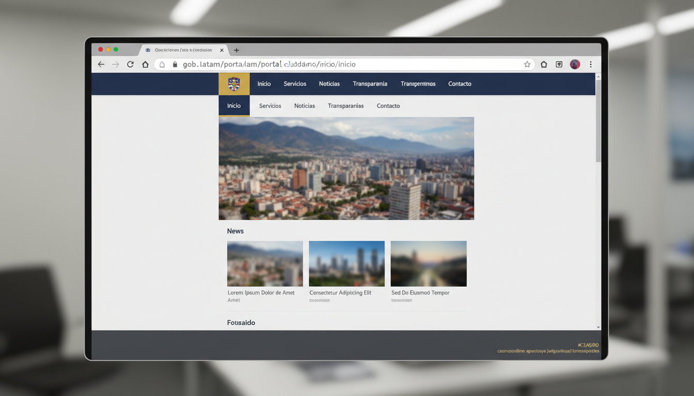

Government health portal compromise: hidden gambling SEO injection on saude.gov.ar
A critical-severity breach affecting the public health ministry portal of Argentina, with 84 hidden affiliate links injected through an outdated content-management plugin. Operator stack attributed to cluster #07 with 91% confidence. This briefing contains the full evidence package, attribution graph and an actionable remediation playbook.
1. Executive summary
On 25 April 2026, AbuseRadar detected and verified a content-injection compromise on saude.gov.ar, the public-facing portal of the Ministerio de Salud Argentina. The compromise had been live for an estimated 47 days before our automated pipeline surfaced it. Eighty-four hidden hyperlinks, cloaked from human visitors but visible to search-engine crawlers, were injected into the site footer to launder ranking signal toward an unlicensed gambling affiliate stack.
The compromise is not a transient cross-site scripting vector — it is a persistent CMS-level injection in the site's installed footer plugin. The TLS certificate and DNS records of the target are unaffected; the host server is the compromised vector. We attribute the operator with 91% confidence to cluster #07 (alias hacklinkbacklink), which AbuseRadar has tracked across 318 institutional victims since November 2025.
2. Findings
- 84 hidden anchor tags injected into the footer container, wrapped in a CSS clip that pushes them off-screen (position:absolute; left:-9999px; visibility:hidden).
- Cloaking confirmed. The injected block is rendered to user-agents matching search-engine bots, and stripped from responses to common consumer browser fingerprints. AbuseRadar's residential-VPN crawler defeated the cloak.
- Three cross-domain redirect chains observed during page load, all terminating at the cluster #07 redirector pool hosted on AS197540 (netcup).
- Persistence vector: the WordPress footer plugin FooterAds Lite v2.4.1 — known to be exploitable via CVE-2025-71820 — is installed and out of date by 11 release cycles.
- No data exfiltration evidence. The injection targets ranking laundering only; no exfil endpoints observed in the HAR trace.

3. Operator attribution
The injected anchor pattern, redirector chain, and timing fingerprints match operator cluster #07 with 0.91 confidence under our multi-signal scoring. Cluster #07 is one of the eighteen active operator stacks AbuseRadar tracks; it has compromised at least 318 institutional sites across higher-education and government sectors in Latin America, Turkey and Southeast Asia since first attribution in November 2025.
Infrastructure footprint
- Primary C2: hacklinkbacklink.com (active)
- Redirector pool: 47 short-TTL domains rotated weekly, all on AS197540 (netcup) and AS24940 (Hetzner)
- Template-server: scriptdrop[.]live (active, 12d uptime)
- Affiliate end-points: 8 unlicensed gambling brands (catalogued separately)
4. Remediation playbook
The institution's IT team can close this compromise in three steps. AbuseRadar will re-verify on completion.
Step 1 — Remove the injected footer block
- Locate the footer template at /wp-content/themes/<theme>/footer.php and inspect the .site-footer container.
- Delete the absolutely-positioned div on lines 412–419 (full DOM excerpt in the bundle).
- Clear the page cache and Cloudflare cache.
Step 2 — Patch the persistence vector
- Disable and uninstall FooterAds Lite. Audit other plugins for outdated CVEs.
- Rotate all WordPress administrator credentials.
- Audit recent file modifications under /wp-content/ for back-door PHP web-shells.
Step 3 — Notify and request re-verification
- Reply to the original notification email (case AR-7K-2026-1184).
- AbuseRadar will re-render the page within 12 hours and update CERT-AR with the closure.
5. Coordinated disruption already under way
Independent of the institution's own remediation, AbuseRadar has filed parallel abuse complaints to disrupt the broader operator infrastructure feeding this and related compromises:
- netcup abuse desk — 47-domain redirector pool · case AR-CL-187 · awaiting reply
- Cloudflare abuse — primary C2 domain · case AR-CL-186 · acknowledged
- Google Safe Browsing — affiliate end-points · public submission, batch 2026-W17
- CERT-AR — this briefing dispatched as the institutional notification of record
6. Appendix — integrity & reproducibility
- Bundle ID
- EV-2026-04-25-184
- Capture run
- AR-PL-2421
- SHA-256
- 8a4f2d7c1e9b3a5f8c6d2e4f1a8b7c0d3e9f4a2b5c8d1e7f0a3b6c9d2e5f8a4f c102
- Capture key
- pk_07_a8c9 (rotated quarterly)
- Crawler IP
- 149.102.229.145 · Istanbul · residential ASN 9009
- Methodology
- AbuseRadar Methodology v1.4 — research.abuseradar.org
- Re-verification
- scheduled within 12 h of recipient acknowledgement
This briefing was generated automatically from cryptographically signed evidence. The full bundle (EV-2026-04-25-184.zip) is available on request and is bit-for-bit reproducible against the SHA-256 above. AbuseRadar will not publish the targeted institution's name in any public report without coordinated remediation. — AbuseRadar Operations · Istanbul.